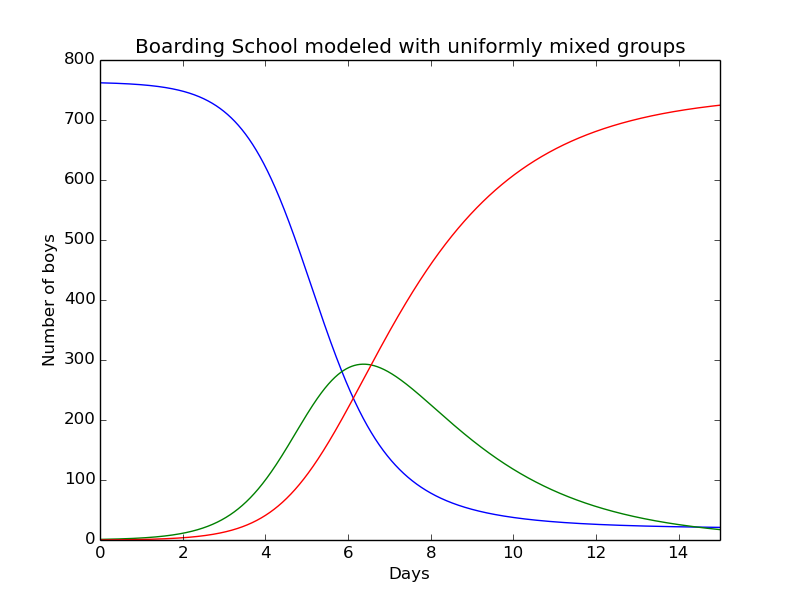
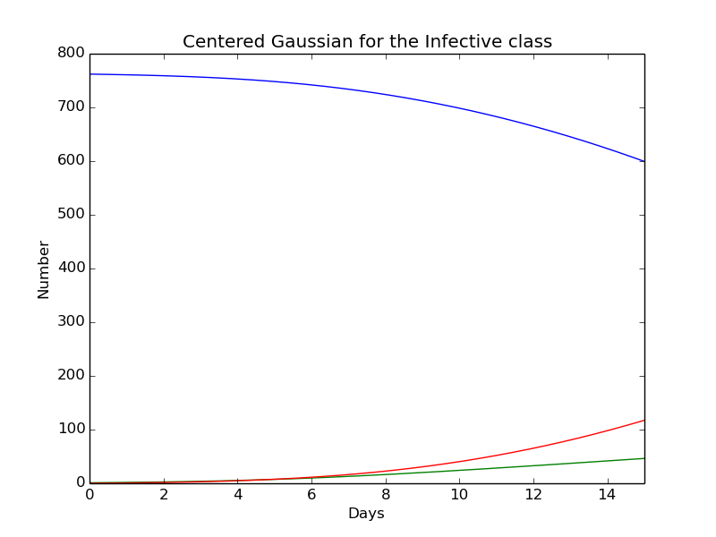
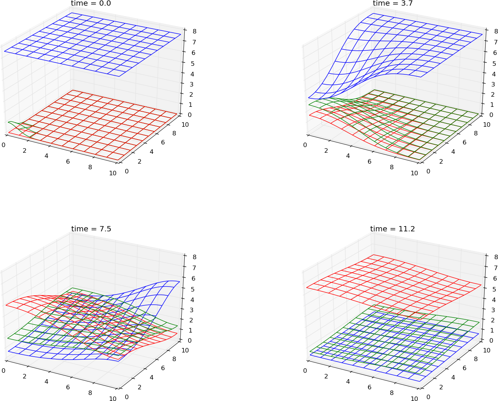

This chapter will introduce a new model for epidemic diseases. While the first chapter was based on a ODE system, will this chapter expand the system to consist of a geographic spread of epidemics. The two first sections will be based on chapters from Murray, while the last part will consist of a modelling of the zombiefication problem explained in chapter 1.
Fisher-Kolmogoroff equation
Simple system for spatial spread
While the systems in the previous chapter only consisted of the temporal variable t in the functions, a spatial variable, x will now be introduced. This means that the position has an effect on the change in each class. The system that will be shown here, will be based on the simple ODE system presented in the previous chapter. The difference will be the diffusion part added to each equation. The system can be seen under
$$
\begin{equation} \tag{1}
\begin{aligned}
\frac{\partial S}{\partial t} &= -rIS + D\nabla ^2 S\\
\frac{\partial I}{\partial t} &= rIS- aI + D\nabla ^2 I\\
\frac{\partial R}{\partial t} &= aI + D\nabla ^2 R
\end{aligned}
\end{equation}
$$
All three classes have the same diffusion coefficient, \( D \). \( rIS \) and \( aI \) will work in the same way as in the ODE system. Since this model taking into account the position, the idea is here to model a group of infective that moves into a uniform population with susceptible, which is spread around with the density \( S_0 \). Then the geotemporal spread can be seen. The problem will be consider as one-dimensional. The system will first be nondimensionalise by writing
$$
\begin{equation} \tag{2}
\begin{aligned}
I^* =\frac{I}{S_0},&\quad I^* = \frac{I}{S_0},&\quad R^*= \frac{R}{S_0},&\\
x^* =\left(\frac{rS_0}{D}\right)^{1/2}x,&\quad t^*=rS_0t,&\quad \lambda =\frac{a}{rS_0},&
\end{aligned}
\end{equation}
$$
\( S_0 \) is here used as a representative population. Now the model(1) can be expressed under. Here the asterisks have been dropped.
$$
\begin{equation} \tag{3}
\begin{aligned}
\frac{\partial S}{\partial t} &= -IS + \frac{\partial^2 S}{\partial x^2},\\
\frac{\partial I}{\partial t} &= IS- \lambda I + \frac{\partial^2 I}{\partial x^2},\\
\frac{\partial R}{\partial t} &= \lambda I + \frac{\partial^2 R}{\partial x^2},
\end{aligned}
\end{equation}
$$
The three parameters \( r \), \( a \) and \( D \) have now been replaced by \( \lambda \). The reproduction rate that was presented for the ODE model in the previous chapter can be seen by \( 1/\lambda \). This has here a couple of equivalent meanings. \( 1/\lambda \) can be seen as the number of secondary infections produced by one primary infected. It can also be used to measure two different time scales. The first one, \( 1/(rS_0) \), measure the contagious time of the disease. The second one can look at the life expectancy for an infective. This can be described \( 1/a \).
The problem that this part will focus on, is the travelling wave. Here seen by a pulse of infected into a group of susceptible. Then a travelling wave solution has to be set,
$$
\begin{equation}
I(x,t)=I(z),\quad S(x,t)=S(z),\quad R(x,t) = R(z),\quad z = x-ct,
\end{equation}
$$
Here the value \( c \) will be the wave speed. This represents a wave of constant shape that travels in the positive x-direction. These can now be inserted into (3). This gives the following ordinary system
$$
\begin{equation} \tag{4}
\begin{aligned}
S'' + cS' - IS &= 0,\\
I'' + cI' + I(S-\lambda)&=0\\
R'' + cR + I\lambda &=0
\end{aligned}
\end{equation}
$$
This gives an eigenvalue problem to find the range of \( \lambda \) so that \( c \) always will be positive. The values of \( S \), \( I \) and \( R \) also has to stay nonnegative. This leads to
$$
\begin{equation}
\begin{aligned}
0 \leq S(-\infty) < S(\infty)&=1\\
I(-\infty)=I(\infty)&=0,\\
1 \geq R(-\infty)\geq R(\infty) &= 0
\end{aligned}
\end{equation}
$$
Figure 1: A gauss curve is inserted on the left side. This causes a travelling wave. The size is measured at \( x=15 \) and can be seen in figure (2).
Figure 2: This shows the epidemic wave measures at at \( x=15 \) in figure(1)
The system(4) is a fourth order phase space system. The lower bound time speed for \( c \) can be found. J.D Murray shows this in kite{Murray}. The Infective class in the system(4) can be linearised when \( z\rightarrow \infty \) $S\rightarrow 1$ and \( I \rightarrow 0 \). The result then become
$$
\begin{equation}
I'' + cI' + I(S-\lambda) \approx 0
\end{equation}
$$
This can be found by
$$
\begin{equation}
I(z) \varpropto \exp\left[(-c \pm {c^2 -4(1-\lambda)}^{1/2})z/2\right]
\end{equation}
$$
It is required that \( I(z)\rightarrow 0 \), but not under. This means that the solution cannot oscillate around 0. If a travelling wave exist, it has to satisfy
$$
\begin{equation}
c \geq 2(1-\lambda)^{1/2}, \lambda< 1
\end{equation}
$$
If \( \lambda > 1 \), no travelling wave will exist. Then the disease will die out. The terms defined in (2) will give the threshold conditions,
$$
\begin{equation}
\lambda = \frac{a}{rS_0} < 1
\end{equation}
$$
This is the same value that was given for the ODE model in the previous chapter.
Verifying the solution
Constant solution
To verify this solution a couple of tests can be done one the system. The first test will be a constant test, where a known constant solution is given. A look at the previous system will give an idea on performing the test.
$$
\begin{equation} \tag{7}
\begin{aligned}
\frac{\partial S}{\partial t} &= -IS + \frac{\partial^2 S}{\partial x^2},\\
\frac{\partial I}{\partial t} &= IS- \lambda I + \frac{\partial^2 I}{\partial x^2},\\
\frac{\partial R}{\partial t} &= \lambda I + \frac{\partial^2 R}{\partial x^2},
\end{aligned}
\end{equation}
$$
By setting the solutions to constants, \( S = C_s,I=C_i,R=C_r \), the value of \( C_i \) has to be 0. This is a poor test and several bugs can escape. The following system can be expanded by adding \( \beta R \) to the system. This give the chance to check the value of \( R \) and the constants can be set to a different value than 0.
$$
\begin{equation} \tag{6}
\begin{aligned}
C_IC_S &= \beta C_r \\
C_IC_S &= \lambda C_I \\
\lambda C_I &= -\beta C_R
\end{aligned}
\end{equation}
$$
The constant values can freely be chosen. Here they are sat to \( C_S = 1.2,C_I=0.8,C_R=0.6 \). This give \( \lambda=1.2 \) and \( \beta=1.6 \). A test can be made
deftest_constant_solution():
""" Test problem where u=u_const is the exact solution, to be reproduced (to machine precision) by any relevant method. """defexact_solution(t):
return C_s,C_i,C_r
deflam(t,x):
return C_s
defbeta(t,x):
return (C_s*C_i)/float(C_r)
#Constant values
C_s =1.2
C_i =0.8
C_r =0.6#lam = C_s#beta = (lam*C_i)/float(C_r)
T =2; Nt =200
X =20; Nx =40
S_1 = np.ones(Nx+3)*C_s
I_1 = np.ones(Nx+3)*C_i
R_1 = np.ones(Nx+3)*C_r
t,x,S,I,R = simple_PDE(T,Nx,Nt,X,lam,beta,S_1,I_1,R_1)
S_e,I_e,R_e = exact_solution(t)
difference =abs(S_e - S).max() # max deviation
tol =1E-14assert difference < tol
difference =abs(I_e - I).max() # max deviation
tol =1E-14assert difference < tol
difference =abs(R_e - R).max() # max deviation
tol =1E-14assert difference < tol
This test was fine and next test that can be done on the system is a Manufactured solution
Manufactured solution
By constructing a function to each equation in the system (3), a manufactured solution can be created. Here \( S \),$I$ and \( R \) are pre produced. The system will be
$$
\begin{equation} \tag{7}
\begin{aligned}
\frac{\partial S}{\partial t} &= -IS + \frac{\partial^2 S}{\partial x^2}+f(x,t),\\
\frac{\partial I}{\partial t} &= IS- \lambda I + \frac{\partial^2 I}{\partial x^2}+g(x,t),\\
\frac{\partial R}{\partial t} &= \lambda I + \frac{\partial^2 R}{\partial x^2}+h(x,t),
\end{aligned}
\end{equation}
$$
where \( f \),$g$ and \( h \) are constructed functions to achieve the expected results for \( S \), \( I \) and \( R \). In this case the functions will be:
$$
\begin{equation}
\begin{aligned}
f(x,t) = \frac{\partial S}{\partial t} + IS - \frac{\partial^2 S}{\partial x^2}\\
g(x,t) = \frac{\partial I}{\partial t} - IS + \lambda I - \frac{\partial^2 I}{\partial x^2}\\
h(x,t) = \frac{\partial R}{\partial t} -\lambda I - \frac{\partial^2 R}{\partial x^2},
\end{aligned}
\end{equation}
$$
When choosing the expected function for the classes, it is important that the fulfill the boundary conditions
$$
\begin{equation}
u_x(0,t) = u_x(X,t) = 0
\end{equation}
$$
The quantities have here been sat to:
$$
\begin{equation}
\begin{aligned}
S(x,t) = cos(\frac{\pi}{X}x)t\\
I(x,t) = cos(\frac{\pi}{X}x)t\\
R(x,t) = cos(\frac{\pi}{X}x)t
\end{aligned}
\end{equation}
$$
Now sympy can be used to do the calculations
Which give
$$
\begin{equation}
\begin{aligned}
f(x,t) &= (t^2\cos(\pi x) + \pi^2t + 1)\cos(\pi x)\\
g(x,t) &= (\lambda t - t^2\cos(\pi x) + \pi^2t + 1)\cos(\pi x)\\
h(x,t) &= (-\lambda t + \pi^2t + 1)\cos(\pi x)
\end{aligned}
\end{equation}
$$
The following manufactured test will then be
deftest_manufactured_solution(T,Nt,X,Nx):
""" Test problem where u=c*t+I is the exact solution, to be reproduced (to machine precision) by any relevant method. """defexact_solution_S(t,x):
return np.cos(np.pi*x)*t
defexact_solution_I(t,x):
return np.cos(np.pi*x)*t
defexact_solution_R(t,x):
return np.cos(np.pi*x)*t
defbeta(t,x):
return exact_solution_S(t,x)*exact_solution_I(t,x)/exact_solution_R(t,x)
lam =1deff(t,x):
return (t**2*np.cos(np.pi*x) + np.pi**2*t +1)*np.cos(np.pi*x)
defg(t,x):
return (lam*t - t**2*np.cos(np.pi*x) + np.pi**2*t +1)*np.cos(np.pi*x)
defh(t,x):
return (-lam*t + np.pi**2*t +1)*np.cos(np.pi*x)
dx = X/float(Nx)
dt = T/float(Nt)
S_1 = exact_solution_S(0,np.linspace(0-dx,X+dx,Nx+3))
I_1 = exact_solution_I(0,np.linspace(0-dx,X+dx,Nx+3))
R_1 = exact_solution_R(0,np.linspace(0-dx,X+dx,Nx+3))
t,x,S,I,R = simple_PDE(T,Nx,Nt,X,lam,beta,S_1,I_1,R_1,f,g,h)
S_e = exact_solution_S(t[-1],x)
I_e = exact_solution_I(t[-1],x)
R_e = exact_solution_R(t[-1],x)
difference_S =abs(S_e - S).max() # max deviation#for i in range(4):# print "n",i,"S_e",exact_solution_S(t[i],x)#print "S",S#t_tot = np.sum(t[:-1])#print "t_tot",t_tot#difference_exp = t_tot*dt*np.cos(x*np.pi)*((2*(np.cos(np.pi*dx)-1))/dx**2+np.pi**2)#print "diff_exp", (abs(difference_exp)).max()print"diff",difference_S
#tol = 1E-14#assert difference < tol
difference_I =abs(I_e - I).max() # max deviation#print "diff",difference_I#tol = 1E-14#assert difference < tol
difference_R =abs(R_e - R).max() # max deviation#print "diff",difference_R#tol = 1E-14#assert difference < tolreturn difference_S,difference_I,difference_R
Convergence rate
The program can be controlled by checking the convergence rate. The error term can be described as
$$
\begin{equation} \tag{8}
\epsilon = C_x\Delta x^2 + C_t \Delta t
\end{equation}
$$
With equation(ref{eq:error}, the expected convergence rate can be found for both \( \Delta x \) and \( \Delta t \). To be able to separate the \( \Delta \)'s, the other value has to be close to eliminated. If the value for \( \Delta x \) wants to be found, \( \Delta t \ll \Delta x \) has to be fullfilled. This will lead to \( C_t\Delta t \approx 0 \), and the error term for \( \Delta x \) can be found. The opposite thing can be done for \( \Delta t \). A table for the error is produced for different values for \( \Delta t = 0.05 \) and \( \Delta x=0.1 \).
dx
dx/2
dx/4
dx/8
dt
9.8E-3
-
-
-
dt/4
9.9E-3
2.5E-3
-
-
dt/8
9.9E-3
2.5E-3
6.1E-4
-
dt/16
9.9E-3
2.5E-3
6.1E-4
1.5E-4
The spatial error
The table above gives an insight on how the error develops when reducing \( \Delta t \) and \( \Delta x \). By studying the row where \( \Delta t/16 \), the \( C_t \Delta t \) can be seen as close to negligible in equation(ref{eq:error}. The error can then be expressed
$$
\begin{equation}
\epsilon \propto \Delta x^r
\end{equation}
$$
The value is expected to be \( r=2 \), since Crank Nicolson is used in the spatial discretization. This gives a 2.order error. By comparing the error for different \( \Delta x \), the convergence rate, \( r \), can be expressed,
$$
\begin{equation} \tag{9}
r_{12} \simeq \frac{\log(\epsilon_1/\epsilon_2)}{\log(\Delta x_1/\Delta x_2)}
\end{equation}
$$
Since the table above has four different error values, these can be used to give three different convergence rates. \( \Delta x_1 = dx, \Delta x_2 = dx/2... \). The same labeling will be done for the different error values, \( \epsilon \).
------
\( \epsilon_1/\epsilon_2 \)
\( \epsilon_2/\epsilon_3 \)
\( \epsilon_3/\epsilon_4 \)
r
2.0056
2.0014
2.0004
The temporal error
The temporal error is quite hard to find because the Stability criteria which is about
$$
\begin{equation} \tag{10}
2\Delta t \leq \Delta x^2
\end{equation}
$$
This results in the case that \( \Delta x \ll \Delta t \) is impossible, because this only leads to an unstable solution. By looking at the column for \( \frac{\Delta x}{8} \), the only stable solution is for \( {\Delta t}{16} \). Therefore the technique used for the spatial error cannot be used here. By studying the diagonal numbers in the table, the expected convergence rate is fulfilled for both \( \Delta x \), which gives \( r = 2 \) and for \( \Delta t \) that gives \( r=1 \)
Travelling wave in 2D
The model can be discretized for a 2D simulation since an epidemic disease will spread geographically. The non dimensional system (3) used in the 1D simulation above can be discretized with Forward Euler in time and Crank Nicolson in space
$$
\begin{equation}
\begin{aligned}
\frac{S^{n+1}_{i,j}-S^n_{i,j}}{\Delta t} &= -I^{n}_{i,j}S^{n}_{i,j} + \left(\frac{S^{n}_{i-1,j}-2S^{n}_{i,j}+S^{n}_{i+1,j}}{\Delta x^2}+\frac{S^{n}_{i,j-1}-2S^{n}_{i,j}+S^{n}_{i,j+1}}{\Delta y^2}\right) \\
\frac{I^{n+1}_{i,j}-I^n_{i,j}}{\Delta t} &= I^{n}_{i,j}S^{n}_{i,j} -\lambda I^{n}_{i,j} + \left(\frac{I^{n}_{i-1,j}-2I^{n}_{i,j}+I^{n}_{i+1,j}}{\Delta x^2}+\frac{I^{n}_{i,j-1}-2I^{n}_{i,j}+I^{n}_{i,j+1}}{\Delta y^2}\right) \\
\frac{R^{n+1}_{i,j}-R^n_{i,j}}{\Delta t} &= \lambda I^{n}_{i,j}+\left(\frac{R^{n}_{i-1,j}-2R^{n}_{i,j}+R^{n}_{i+1,j}}{\Delta x^2}+\frac{R^{n}_{i,j-1}-2R^{n}_{i,j}+R^{n}_{i,j+1}}{\Delta y^2}\right)
\end{aligned}
\end{equation}
$$
Now the known values can be placed on the right side. The system will then be
$$
\begin{equation}
\begin{aligned}
S^{n+1}_{i,j} &= S^{n}_{i,j}+\Delta t\left(-I^{n}_{i,j}S^{n}_{i,j} + \left(\frac{S^{n}_{i-1,j}-2S^{n}_{i,j}+S^{n}_{i+1,j}}{\Delta x^2}+\frac{S^{n}_{i,j-1}-2S^{n}_{i,j}+S^{n}_{i,j+1}}{\Delta y^2}\right)\right) \\
I^{n+1}_{i,j} &= I^{n}_{i,j}+\Delta t\left(I^{n}_{i,j}S^{n}_{i,j} -\lambda I^{n}_{i,j} + \left(\frac{I^{n}_{i-1,j}-2I^{n}_{i,j}+I^{n}_{i+1,j}}{\Delta x^2}+\frac{I^{n}_{i,j-1}-2I^{n}_{i,j}+I^{n}_{i,j+1}}{\Delta y^2}\right)\right) \\
R^{n+1}_{i,j} &= R^{n}_{i,j}+\Delta t\left(\lambda I^{n}_{i,j}+\left(\frac{R^{n}_{i-1,j}-2R^{n}_{i,j}+R^{n}_{i+1,j}}{\Delta x^2}+\frac{R^{n}_{i,j-1}-2R^{n}_{i,j}+R^{n}_{i,j+1}}{\Delta y^2}\right)\right)
\end{aligned}
\end{equation}
$$
This results in an explicit system, which is easy to code. It consist of known values on the right side and only one unknown on the left side.
A gaussian wave
In the PDE system for the 1D equation, a Gaussian quantity of infected humans was placed on the left side in the initial value. This resulted in a wave of infected spread along the x-axis. A similar thing can be done for the 2D simulation. A couple of simulations have been done for the 2D system. The first simulation is run for a Gaussian function along \( x=0 \) and the second simulation is run for a Gaussian function from \( x=0,y=0 \) for the infected humans as initial value. Both simulations can be seen in the Appendix.
By studying the travelling wave at a certain point, the size of the epidemic wave can be measured and compared. In these two 2D simulations, the wave will be measured in the point (15,15) while the travelling wave in the 1D simulation was measured in point(15). The two travelling waves can be seen in the figure(3).
Figure 3: Travelling wave measured at point (15,15) with two different initial values for the Infected class. The initial value is sat as a Gaussian line along (0,y) in the left plot and as a Gaussian point (0,0) in the right plot
The shape of these two travelling waves are similar. The only difference is the time when the wave occur. The plot for 1D wave in fig(2) has the same shape. With a closer study, the area under the function can be measured for all three cases. The result can be seen in the table below.
1.43352971688
1D wave
2D wave line
2D wave point
1.43
1.43
1.43
The area in all three cases are similar. The size and shape will not be affected based on the expansion from 1D to 2D. But by studying the figure(3), the waves occur at different time in the two 2D simulations. This is caused by the distance from the start position for the Gaussian wave. The first subplot that starts with a Gaussian function along the \( x=0 \) axis, gets a wave of infected wash along the x axis. This can be seen as a wave on the beach. Everyone that have the same distance from the ocean will be hit simultaneously. The travelling wave for the 1D simulation and the first subplot occur at the same time, because they are measured at the same distance from the starting point. The last plot is also measured at (15,15), but occur later. Since the wave starts at point (0,0), the distance to (15,15) is 21.21. This means that the wave will start about 6 time steps later. This is also reasonable by looking at the plot.
Change in initial flow
Another test that can be done to the travelling wave, is to check if the size of the initial wave will affect the travelling wave. The simulation is run with the same parameter as for the three simulations above and the only difference is the initial value for the infected group. The Gaussian wave of infected are placed a point (0,0) as for right subplot in figure(3).The simulation can be seen in figure(4).
Figure 4: A major flow of infected spread outwards the field. After a certain time, the wave has past the area and the number in each class stabilize.
By measuring the travelling wave at (15,15), the size and shape can be compared with the second subplot in figure(3). This is done in figure(5).
Figure 5: The travelling wave with a major increase of infected at the initial time.
The figure(5) shows a similar size and shape as for the other simulations run earlier. By increasing the initial value, the size of the travelling wave cannot be affected. But there is a difference in the time when the wave occur. In this simulation where the initial value is higher, the travelling wave reaches the measuring point (15,15) earlier. This can be explained by the idea of a ball dropped from height. If the ball is released or thrown to the ground, will only affect the acceleration of the ball, but not the terminal velocity. After a certain time the released ball and the thrown ball will reach the same maximum speed. This is also the case for the speed of the travelling wave.
Change in lambda
The one thing that affects the speed and size, is the \( \lambda \) variable in the PDE system(3). This \( \lambda \) is a combination of \( a \), which controls deaths among infected, \( r \), which control the number of infected in a meeting between an infected and a susceptible. The last parameter in \( \lambda \) is the concentration of Susceptible. By changing this parameter, the travelling wave will change in both size and shape. In figure(6), the simulation is run with four different values of \( \lambda \).
Figure 6: The travelling wave simulated with \( \lambda \) values in the range of 0.01 to 1
To understand the result in figure(6), the \( \lambda \) function can be study,
$$
\begin{equation} \tag{11}
\lambda =\frac{a}{rS_0},
\end{equation}
$$
When \( \lambda \rightarrow 0 \), this cause a major and aggressive travelling wave. In figure(6), \( \lambda \) is run with the value 0.01 in the first subplot. This result in a travelling wave of infected that eradicates the number of Susceptible in a short time. The wave stars decreasing when all Susceptible are infected. By looking at the equation(11), a small value is caused by a small \( a \) compared to \( r \) and \( S_0 \). If \( a \) is low, this result in few deaths/immune in the infected class. This means that this class will grow and be able to infect even more humans from the Susceptible class. The same thing will happen if \( r \) is large. A result of this will cause an aggressive disease that will infect major part of the population. The same result will happen if \( S_0 \) is large. Then there are several possible humans to infect. Therefore a outburst of a disease is more critically in a city than in the wilderness far from other humans.
If \( \lambda \) increases above 1, the disease will not be able to spread. Then the number of infected will decrease, since the number of dead/immune infected are higher than the infected susceptible. After a certain time, the number of infected will die out. If \( \lambda \) stays at 1, the number of infected will be equal the whole time.
Epidemic in an English Boarding School 1978
I the previous chapter an example from the English boarding school was presented. This example was based on the book from J.D Murray and was modeled for a ODE system. By using the parameters a similar result should appear for the PDE system. The school had 763 students where one of the students brought with him a disease back to the school. The following number was used for the ODE system in chapter one. \( N=763, S_0=762,I_0=1,R_0=0,\rho=202 \) and \( r = 2.18\cdot 10^{-3} \).
The first simulation that is done on the PDE system is produced with an uniform distributed concentration of the three classes all over the area. A person has a given volume of one cubic. The total volume of the whole group is spread over the area. The area is sat to be 10 x 10, which means that the height of one person will be \( 1/100 \). Since the Infected group only consist of one person, the total height will be 0.01 for the whole area. The Susceptible group consist of 762 students and the total height in each point will be 7.62. The simulation can be seen in the Appendix.
The results from figure(7) are equal with the result from the ODE system modeled in the previous chapter.This can be seen in the table table:english_numbers This is as expected since the diffusion term i negligible in this system and that it in reality is group of separate ODE systems modeled over an area.
Figure 7: English Boarding School modeled over a uniform distributed area.

ODE system
PDE uniform dist
PDE center
PDE corner
5 Days
Susceptible
449.28
Infective
Removed
10 Days
Susceptible
Infective
Removed
15 Days
Susceptible
Infective
Removed
Introducing a Gaussian distribution
The sick one is placed in the center of the School area.
Figure 8: This seems to have no effect and the spread of the disease is similar to the one above. But if a student is lucky to stand in one corner, he has a greater chance to stay healthy

Gaussain from the corner. This one gives other results. It has a slower diffusion.
A wave of infected moves towards the school yard

Figure 9: This simulation gives another result. Here the number of infected increase later than in the previous examples